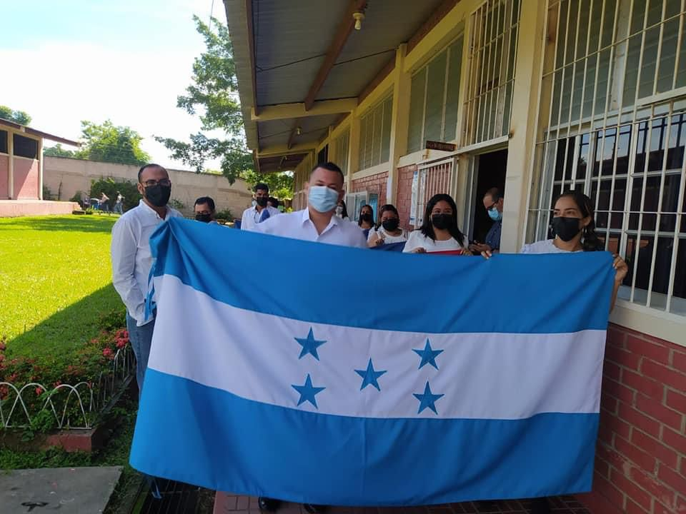

Instituto polivalente "Francisco Morazan"
El 1 de septiembre de 1995 se instituyó como Día de la Bandera Nacional de Honduras, durante el gobierno de Carlos Roberto Reina. El diseño de la bandera estuvo a cargo de Manuel José Arceque, quien se inspiró en las Bandera de las Provincias Unidas del Río de la Plata, actualmente conocida como Argentina.
La Bandera Nacional de Honduras es considerada símbolo patrio y su día se celebra el 1 de septiembre de cada año. Fue creada mediante el Decreto Legislativo N° 7 el 6 de marzo de 1866, por el presidente de la República Don José María Medina.
